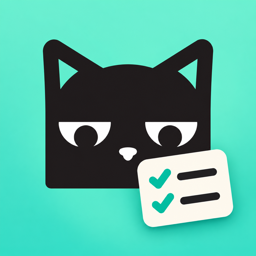
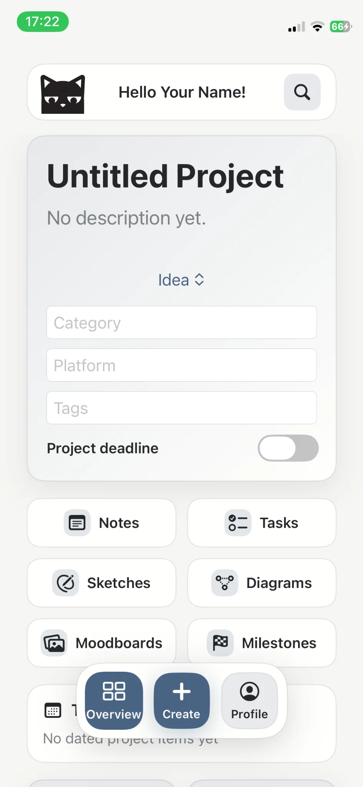
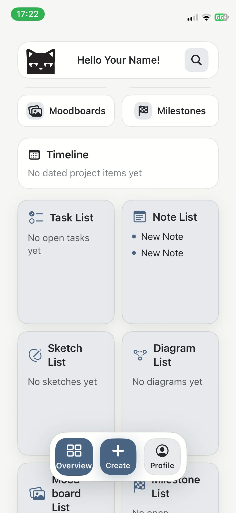
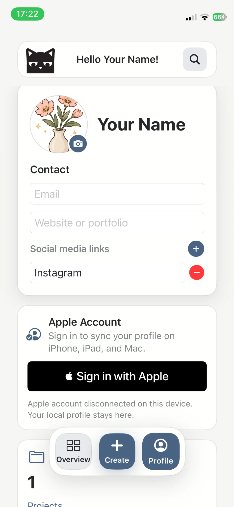

Notes & tasks
Capture thoughts and keep track of what needs to get done.

ProjectKitGet the appFrom the first spark to the final milestone. Keep your notes, tasks, sketches, diagrams and moodboards together in ProjectKit.
For iPhone, iPad & Mac

Plan, collect and create in a workspace that keeps your thinking organized.
Capture thoughts and keep track of what needs to get done.
Give ideas room to take shape, visually.
Gather inspiration and creative direction in one place.
See your progress and keep the bigger picture in view.
Real screenshots from the iPhone app — no concept screens or mock interfaces.


ProjectKit is available for iPhone, iPad and Mac. Move between your devices as your projects evolve.
View supported devices on the App Store ↗